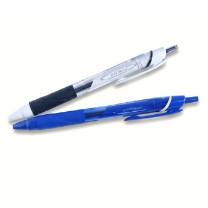
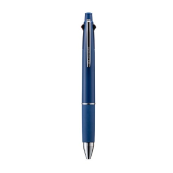
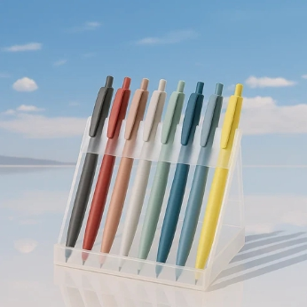

독서실이나 고시촌에 가본 적이 있다면 한 번쯤 봤을 겁니다. 책상 위에 줄지어 놓인 까만 볼펜 여러 자루 — 십중팔구 유니 제트스트림입니다. 2006년 첫 출시 이후, 이 볼펜은 공무원 시험, 법학적성시험, 각종 자격증 시험을 준비하는 수험생들 사이에서 사실상의 표준이 되었습니다.
그런데 문구점에 가면 수백 종의 볼펜이 있는데, 왜 하필 제트스트림일까요? "고시생 볼펜"이라는 타이틀이 그냥 붙은 게 아닙니다. 직접 한 달간 주력으로 사용하면서 느낀 점을 솔직하게 풀어봅니다.
처음 잡았을 때의 인상
패키지는 소박합니다. 화려한 박스도 없고, 거창한 설명도 없습니다. 기본 모델(SXN-150)의 경우 편의점에서도 쉽게 구할 수 있는 가격대. 외관만 보면 여느 저가 볼펜과 크게 다를 바 없어 보입니다.
하지만 캡을 열고 첫 획을 긋는 순간, 차이를 알게 됩니다. 종이 위에서 펜촉이 미끄러지듯 움직이는데, 일반 유성볼펜에서 흔히 느끼는 뻑뻑함이나 걸림이 거의 없습니다. 이게 바로 제트스트림만의 "저점도 잉크"가 만들어내는 필기감입니다.
제트스트림 잉크는 일반 유성 잉크보다 점도를 크게 낮춰 볼과 종이 사이의 마찰을 줄인 것이 특징입니다. 덕분에 힘을 거의 주지 않아도 잉크가 고르게 나오고, 장시간 필기해도 손목 부담이 상대적으로 적은 편입니다.

Best Seller · 입문용 추천
유니 제트스트림 SXN-150 (0.5mm)
가장 기본이 되는 단색 모델. 고시 입문자에게 첫 번째로 추천하기 좋은 제트스트림입니다.
필기감 — "0.5인데 0.7 같다"
제트스트림 사용자들이 공통으로 하는 말이 있습니다. "한 단계 굵은 펜을 쓰는 것 같은 부드러움"이라는 것. 실제로 0.5mm 제트스트림의 필기감은 다른 브랜드의 0.7mm에 견줄 만하다고 느끼는 사람도 많습니다.
속건성도 인상적입니다. 왼손잡이 필기자가 가장 고민하는 게 글씨 번짐인데, 제트스트림은 비교적 빠르게 마르는 편이라 급하게 페이지를 넘길 때 부담이 적습니다.
다만, 부드러움이 양날의 검이 될 수 있다는 점도 언급해야 합니다. 너무 미끄러운 나머지 글씨체가 흐트러진다는 의견도 있습니다.
굵기별 선택 가이드
| 굵기 | 필기 느낌 | 추천 상황 | 한줄 평 |
|---|---|---|---|
| 0.28mm | 극세필, 날카로움 | 도표·그래프 | 마니아 전용 |
| 0.38mm ★ | 세필, 사각거리는 맛 | 고시 답안, 노트 | 한국 인기 1위 |
| 0.5mm ★ | 밸런스, 부드러움 | 올라운드 필기 | 입문자 추천 |
| 0.7mm | 가장 부드러움 | 속기, 사무용 | 시험장 인기 |
| 1.0mm | 대담하고 굵은 선 | 서명, 강조 | 특수 용도 |
개인적인 추천은 처음 사는 분이라면 0.5mm입니다. 가장 밸런스가 좋고, 세필이 좋다면 이후 0.38mm로 내려가는 흐름도 자연스럽습니다.
어떤 모델을 살까? — 라인업 정리
① 스탠다드 (SXN-150) — "기본이 최강"
기본 모델이지만, 제트스트림 잉크의 장점을 비교적 잘 보여주는 대표 모델입니다. 가볍고 심플한 바디, 노크식 구조로 부담 없이 여러 자루 사서 시험장에 들고 가기 좋습니다.
② 멀티펜 4&1 (MSXE5-1000) — "한 자루로 끝"
검정·빨강·파랑·초록 4색 볼펜에 0.5mm 샤프까지 탑재된 멀티펜. 색상별 노트 정리에 최적화된 선택입니다.

Most Popular · 효율 극대화
유니 제트스트림 멀티펜 4&1 (0.5mm)
4색 볼펜과 샤프를 한 자루에. 복습 효율과 필기 정리를 함께 챙기고 싶은 사람에게 잘 맞습니다.
③ 엣지 (SXN-1003) — "극세필의 끝판왕"
0.28mm 극세필이라는 독보적인 포지션. 포인트 형태의 특수 팁 설계로 정밀한 작은 글씨를 쓰고 싶은 사람에게 어울립니다.
④ 라이트터치 (SXN-LS) — "2세대 잉크의 진화"
최근 출시된 모델로, 기존보다 한 단계 더 부드러운 느낌을 내세운 "라이트터치 잉크"를 탑재했습니다. 기존 사용자에게 업그레이드 후보가 될 수 있습니다.

2024 New · 업그레이드 추천
유니 제트스트림 라이트터치 (0.5mm)
라이트터치 잉크를 적용한 모델. 기존 제트스트림보다 더 부드러운 필기감을 찾는 사람에게 맞는 선택입니다.
솔직한 장단점 정리
👍 장점
- 부드러운 필기감
- 비교적 빠른 속건성
- 짙고 선명한 발색
- 풍부한 굵기·모델 라인업
- 합리적인 가격대
- 리필심 별도 판매 가능
👎 아쉬운 점
- 너무 미끄럽게 느껴질 수 있음
- 유성볼펜 특성상 볼펜똥이 생길 수 있음
- 부드러움에 익숙해지면 다른 펜이 뻑뻑하게 느껴짐
- 기본 바디 디자인은 평범한 편
구매 전 알아두면 좋은 것들
리필심은 미리 사두세요. 단색용은 SXR 시리즈, 멀티펜용은 SXR-80 또는 SXR-ML 시리즈입니다. 본체보다 저렴하니 여유분을 확보해두면 편합니다.
시험장에는 같은 펜을 최소 3자루 가져가세요. 동일한 굵기, 동일한 색상으로 통일하는 게 포인트입니다.
필압은 가볍게. 제트스트림은 낮은 필압에서도 충분히 진한 발색이 나오는 편입니다. 세게 눌러 쓰면 오히려 볼에 부담이 갈 수 있습니다.
멀티펜 색상 활용 팁: 검정(본문) → 빨강(핵심 키워드) → 파랑(보충 설명) → 초록(출처·참고사항). 이렇게 색상 체계를 잡으면 복습할 때 구조가 더 잘 보입니다.